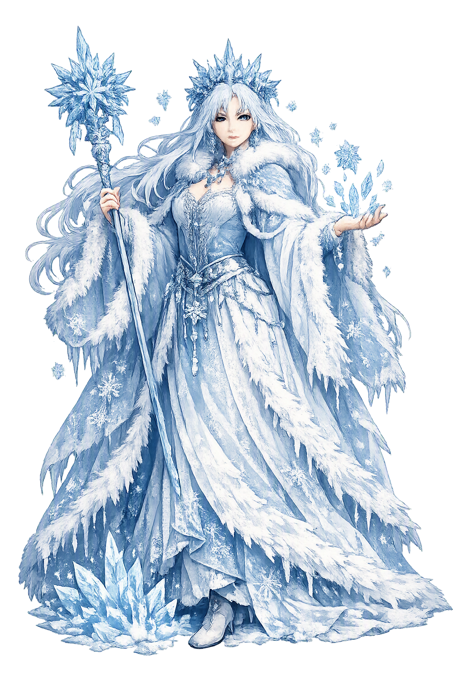

Stories of Marzanna
Marzanna is a goddess of ritual, not text: no Slavic epic survives to tell her story, so her mythology lives in the calendar — in the spring drownings, the dirges for drowned maidens, and the folk etymologies that name her Frost or Nightmare. The sources are ethnographic and late; the feeling they preserve is very old.
Every spring, in the week the church calendar calls Zielone Świątki ('Green Week'), villages across Poland carry Marzanna out of the settlement: a doll of straw and rags dressed as a woman, crowned, shawled, and splashed with water as she goes. The procession winds to the river or the last snowdrift, where the effigy is beaten, burned, or — most often — thrown into the current and held under until she drowns. The children sing that Marzanna is dead, and they carry home green boughs, the gaik, to prove that life has returned with her going. Jan Máchal described the rite for the Mythology of All Races survey in 1918, and Polish ethnography has recorded it without a break into the twenty-first century. The myth built into the ritual is stark and unsentimental: winter is a goddess, and the year cannot turn until she is dead. The village does not mourn her. It drowns her.
North of Poland the mourning falls on a different name. In the cycle assembled by A. N. Afanasyev and printed by Máchal (Slavic Mythology, 1918), Russian girls sing spring dirges for Kostroma, a maiden of the rites. In one legend she is the daughter of the Polotsk prince Samo; walking on the Volga's bank she fell asleep, the water-nymphs came and braided her hair, played with her — and drowned her. Her death was mourned like a calamity, with funeral songs, and the mourning ended by burying a straw effigy in her place. Afanasyev argued that the dirges preserve a dying vegetation goddess behind the maiden, a reading later scholars have accepted with caution: the songs are genuine folklore, the goddess is inference. Whether Kostroma is Marzanna under another name is exactly the kind of question the fragmentary Slavic record cannot settle. The grief, at least, is real — and it is the grief due to the dying of the year.
The fullest modern telling pairs her with a young god. In the reconstruction of Boris Rybakov (Ancient Slavic Paganism, 1981), Marzanna belongs to a seasonal drama: Jarilo (Jarovit), the youthful power of spring vegetation and erotic force, dies each year, and winter — Marzanna — reigns over his absence until the rites call him back. Rybakov read the cycle out of calendar customs, wedding songs, and comparative Indo-European parallels. It must be said plainly: no medieval Slavic text narrates this story. It is a modern construction from folklore, and specialists dispute its details. Yet the pattern it assembles — a dying young god, a reigning hag of frost, a spring release sealed by water — matches rites that were genuinely performed for centuries, and it gives Marzanna a narrative worthy of the dread her name carries.
Her name is itself the myth's riddle, and linguists still divide over it. One school derives Marzanna from Polish marz-, 'frost' (marznąć, 'to freeze, to grow numb') — the goddess as the frozen months given a body. Another connects her to the Slavic mora, the female night-hag who crouches on sleepers' chests, a word that survives in English 'nightmare'; on this reading she is less a season than a death-spirit who owns the season. Both derivations run into the cold and the dead, and her cousins across the Slavic world carry the second name openly: Morana in the Czech lands, Morena in Slovakia, Mara in the Balkans. Medieval church synods raged against her rites for centuries. A goddess whose own name resists etymology is a goddess who holds both meanings at once: winter as frost, and winter as the little death that must be drowned each spring.
Winter
Marzanna is the Slavic goddess of winter, frost, and death — the withering power whose departure is celebrated each spring. Her name belongs to the cold family of Polish marznąć, 'to freeze,' and her kinship with the nightmare-hag mora ties her to the dying of the year itself. Every March her effigy is drowned so the world can thaw.
From autumn to early spring she governs the frozen months: fields locked in frost, rivers stilled, the sun weak and low.
Her domain includes the death of the old year — the withered hag whose reign must end before anything can grow.
Each spring, in Zielone Świątki ('Green Week'), her straw effigy is carried out and drowned — driving winter from the village.
Under the names Morana, Morena, and Mara she is honored across Poland, the Czech lands, Slovakia, and the Balkans.
From the original script to the living URL
Marzanna
The name survives in scholarly transliteration. Marzanna is the standard Slavic romanisation, documented in academic sources — “Death goddess”. Because the spelling uses only Latin letters, the form is the same in both ASCII and Unicode.
No indigenous writing system is securely attested for individual slavic names. The form shown is a modern scholarly transliteration.
marzanna
The plain marzanna form is identical to the Unicode restoration. Because this name is already written in Latin letters, no diacritics, stress, or script information were lost — only capitalization differs.
Marzanna
The Unicode restoration does not need to recover lost marks for Marzanna. Its value is canonical spelling and consistent cataloguing, not the reconstruction of erased orthography. The domain is readable as-is to both DNS and humanity.
Marzanna.com
This restoration is written entirely in ASCII letters — no Punycode encoding stands between Marzanna and the DNS. The domain reads identically to machines and to human eyes.
Owned, ideal, and ASCII forms of Marzanna
Marzanna
The full Unicode restoration. marzanna.com is not in the PuniCodex collection — it is watched for release; if it drops, this temple upgrades to an owned flagship.
How Marzanna was spoken
How Marzanna is preserved in writing
No indigenous writing system is securely attested for individual slavic names. The form shown is a modern scholarly transliteration.
Contribute scholarly provenance →Most cultures personify the good seasons; the Slavs dared to personify the bad one. Marzanna is the honest goddess: winter without apology, old age and frost and the failure of things, given a woman's face and a woman's name. What her rite teaches is bracing. You do not appease winter, and you do not wait it out in reverent silence; you make a doll of it, carry it to the river in procession, singing, and hold it under. Renewal is not a mood but an act — an act with a body count of one, gladly paid. There is also a darker reading available. The effigy is a woman, and the village drowns her so the crops can grow. However we judge that image, the ritual holds it up every spring and lets us look. Perhaps that is the deepest use of Marzanna: a culture keeping, in public and with its children watching, a ceremony that admits winter must be killed — and asks who, each year, does the killing.
Enter Extended Lore